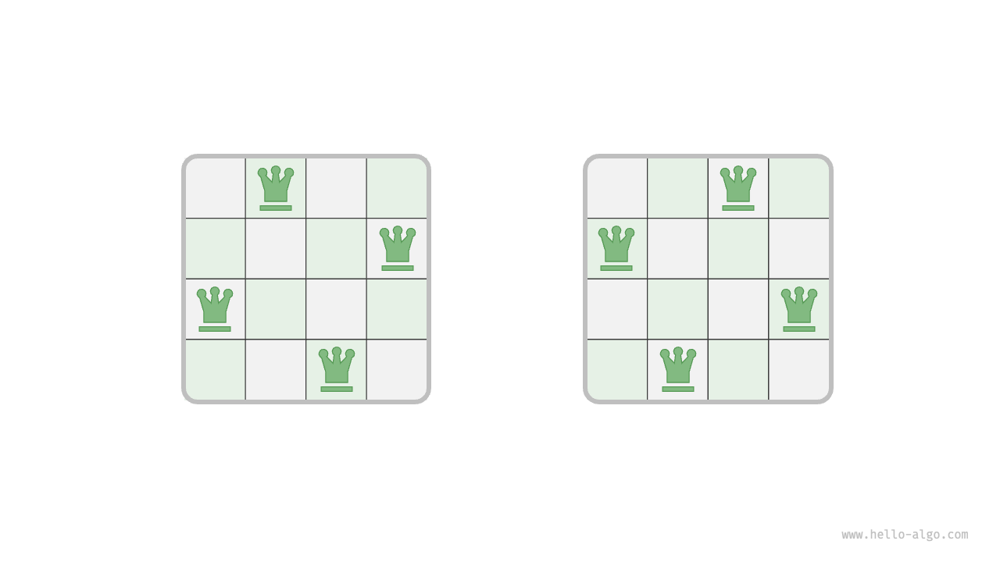
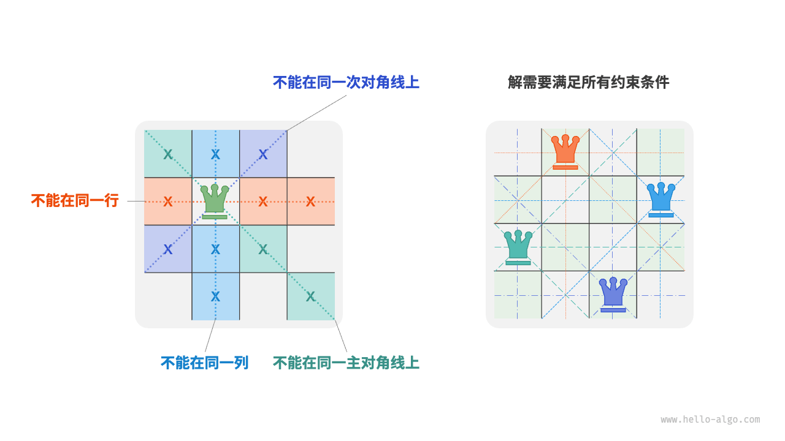

N 皇后问题
!!! question
根据国际象棋的规则，皇后可以攻击与同处一行、一列或一条斜线上的棋子。给定 $n$ 个皇后和一个 $n \times n$ 大小的棋盘，寻找使得所有皇后之间无法相互攻击的摆放方案。
如下图所示，当 $n = 4$ 时，共可以找到两个解。从回溯算法的角度看，$n \times n$ 大小的棋盘共有 $n^2$ 个格子，给出了所有的选择 choices 。在逐个放置皇后的过程中，棋盘状态在不断地变化，每个时刻的棋盘就是状态 state 。

下图展示了本题的三个约束条件：多个皇后不能在同一行、同一列、同一条对角线上。值得注意的是，对角线分为主对角线 \ 和次对角线 / 两种。

逐行放置策略
皇后的数量和棋盘的行数都为 $n$ ，因此我们容易得到一个推论：棋盘每行都允许且只允许放置一个皇后。
也就是说，我们可以采取逐行放置策略：从第一行开始，在每行放置一个皇后，直至最后一行结束。
下图所示为 $4$ 皇后问题的逐行放置过程。受画幅限制，下图仅展开了第一行的其中一个搜索分支，并且将不满足列约束和对角线约束的方案都进行了剪枝。

从本质上看，逐行放置策略起到了剪枝的作用，它避免了同一行出现多个皇后的所有搜索分支。
列与对角线剪枝
为了满足列约束，我们可以利用一个长度为 $n$ 的布尔型数组 cols 记录每一列是否有皇后。在每次决定放置前，我们通过 cols 将已有皇后的列进行剪枝，并在回溯中动态更新 cols 的状态。
那么，如何处理对角线约束呢？设棋盘中某个格子的行列索引为 $(row, col)$ ，选定矩阵中的某条主对角线，我们发现该对角线上所有格子的行索引减列索引都相等，即对角线上所有格子的 $row - col$ 为恒定值。
也就是说，如果两个格子满足 $row_1 - col_1 = row_2 - col_2$ ，则它们一定处在同一条主对角线上。利用该规律，我们可以借助下图所示的数组 diags1 记录每条主对角线上是否有皇后。
同理，次对角线上的所有格子的 $row + col$ 是恒定值。我们同样也可以借助数组 diags2 来处理次对角线约束。

代码实现
请注意，$n$ 维方阵中 $row - col$ 的范围是 $[-n + 1, n - 1]$ ，$row + col$ 的范围是 $[0, 2n - 2]$ ，所以主对角线和次对角线的数量都为 $2n - 1$ ，即数组 diags1 和 diags2 的长度都为 $2n - 1$ 。
- "Python"
```python title="n_queens.py"
def backtrack(
row: int,
n: int,
state: list[list[str]],
res: list[list[list[str]]],
cols: list[bool],
diags1: list[bool],
diags2: list[bool],
):
"""回溯算法：N 皇后"""
// 当放置完所有行时，记录解
if row == n:
// 遍历所有列 for col in range(n):res.append([list(row) for row in state]) return// 计算该格子对应的主对角线和次对角线 diag1 = row - col + n - 1 diag2 = row + col // 剪枝：不允许该格子所在列、主对角线、次对角线上存在皇后 if not cols[col] and not diags1[diag1] and not diags2[diag2]: // 尝试：将皇后放置在该格子 state[row][col] = "Q" cols[col] = diags1[diag1] = diags2[diag2] = True // 放置下一行 backtrack(row + 1, n, state, res, cols, diags1, diags2) // 回退：将该格子恢复为空位 state[row][col] = "#" cols[col] = diags1[diag1] = diags2[diag2] = False
def nqueens(n: int) -> list[list[list[str]]]: """求解 N 皇后""" // 初始化 n*n 大小的棋盘，其中 'Q' 代表皇后，'#' 代表空位 state = [["#" for in range(n)] for _ in range(n)] cols = [False] n // 记录列是否有皇后 diags1 = [False] (2 n - 1) // 记录主对角线上是否有皇后 diags2 = [False] (2 * n - 1) // 记录次对角线上是否有皇后 res = [] backtrack(0, n, state, res, cols, diags1, diags2)
return res
- "C++"
```cpp title="n_queens.cpp"
/* 回溯算法：N 皇后 */
void backtrack(int row, int n, vector<vector<string>> &state, vector<vector<vector<string>>> &res, vector<bool> &cols,
vector<bool> &diags1, vector<bool> &diags2) {
// 当放置完所有行时，记录解
if (row == n) {
res.push_back(state);
return;
}
// 遍历所有列
for (int col = 0; col < n; col++) {
// 计算该格子对应的主对角线和次对角线
int diag1 = row - col + n - 1;
int diag2 = row + col;
// 剪枝：不允许该格子所在列、主对角线、次对角线上存在皇后
if (!cols[col] && !diags1[diag1] && !diags2[diag2]) {
// 尝试：将皇后放置在该格子
state[row][col] = "Q";
cols[col] = diags1[diag1] = diags2[diag2] = true;
// 放置下一行
backtrack(row + 1, n, state, res, cols, diags1, diags2);
// 回退：将该格子恢复为空位
state[row][col] = "#";
cols[col] = diags1[diag1] = diags2[diag2] = false;
}
}
}
/* 求解 N 皇后 */
vector<vector<vector<string>>> nQueens(int n) {
// 初始化 n*n 大小的棋盘，其中 'Q' 代表皇后，'#' 代表空位
vector<vector<string>> state(n, vector<string>(n, "#"));
vector<bool> cols(n, false); // 记录列是否有皇后
vector<bool> diags1(2 * n - 1, false); // 记录主对角线上是否有皇后
vector<bool> diags2(2 * n - 1, false); // 记录次对角线上是否有皇后
vector<vector<vector<string>>> res;
backtrack(0, n, state, res, cols, diags1, diags2);
return res;
}
- "Java"
```java title="NQueens.java"
/ 回溯算法：N 皇后 /
void backtrack(int row, int n, List
// 当放置完所有行时，记录解 if (row == n) {boolean[] cols, boolean[] diags1, boolean[] diags2) {
} // 遍历所有列 for (int col = 0; col < n; col++) {List<List<String>> copyState = new ArrayList<>(); for (List<String> sRow : state) { copyState.add(new ArrayList<>(sRow)); } res.add(copyState); return;
} }// 计算该格子对应的主对角线和次对角线 int diag1 = row - col + n - 1; int diag2 = row + col; // 剪枝：不允许该格子所在列、主对角线、次对角线上存在皇后 if (!cols[col] && !diags1[diag1] && !diags2[diag2]) { // 尝试：将皇后放置在该格子 state.get(row).set(col, "Q"); cols[col] = diags1[diag1] = diags2[diag2] = true; // 放置下一行 backtrack(row + 1, n, state, res, cols, diags1, diags2); // 回退：将该格子恢复为空位 state.get(row).set(col, "#"); cols[col] = diags1[diag1] = diags2[diag2] = false; }
/ 求解 N 皇后 /
List
backtrack(0, n, state, res, cols, diags1, diags2);
return res;
} ```
逐行放置 $n$ 次，考虑列约束，则从第一行到最后一行分别有 $n$、$n-1$、$\dots$、$2$、$1$ 个选择，因此时间复杂度为 $O(n!)$ 。实际上，根据对角线约束的剪枝也能够大幅缩小搜索空间，因而搜索效率往往优于以上时间复杂度。
数组 state 使用 $O(n^2)$ 空间，数组 cols、diags1 和 diags2 皆使用 $O(n)$ 空间。最大递归深度为 $n$ ，使用 $O(n)$ 栈帧空间。因此，空间复杂度为 $O(n^2)$ 。